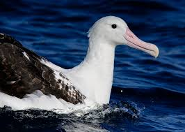
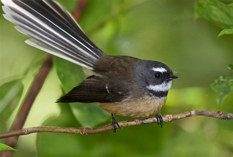
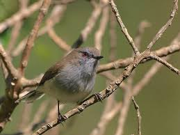
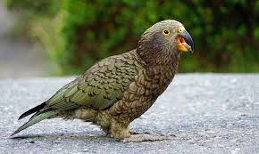
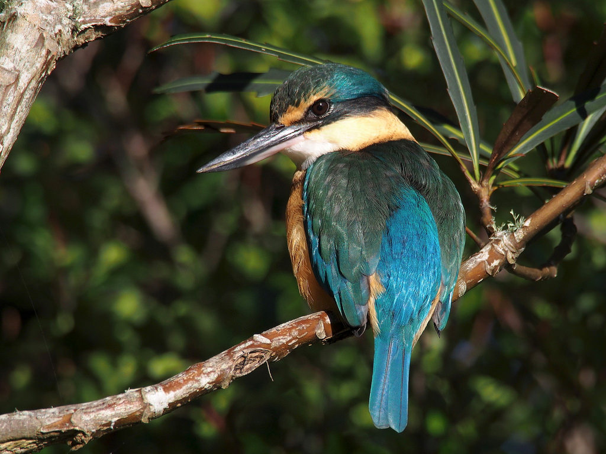
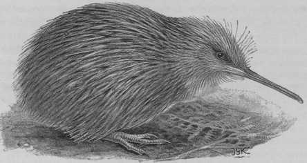
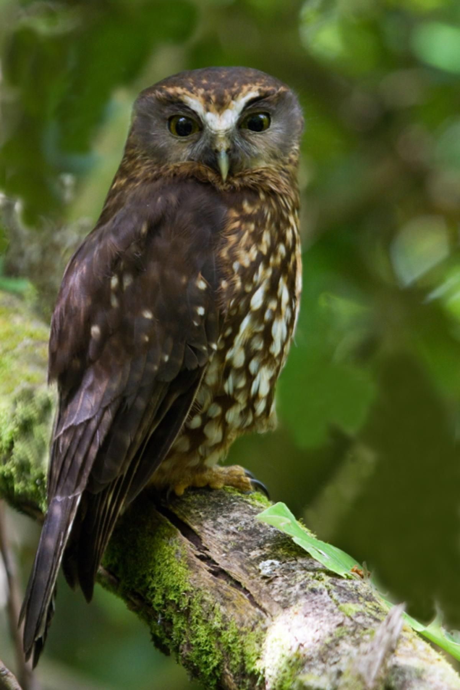

| Bird Name | picture | sound | info |
|---|---|---|---|
| Albatross (Northern Royal) |  | The northern royal albatross is a huge white albatross with black upperwings.
It usually mates for life and breeds only in New Zealand. Biennial breeding takes place primarily on The Sisters and The Forty-Fours Islands in the Chatham Islands. There is also a tiny colony at Taiaroa Head near Dunedin on the mainland of New Zealand, which is a major tourist attraction. |
|
| Bellbird |

|
Bellbirds are the most widespread and familiar honeyeater in the South Island, and are also common over much
of the North Island.
Their song is a welcome sound in mainland forests that otherwise may have little native bird song. Although they have a brush-like tongue which is used to reach deeply into flowers to reach nectar, bellbirds also feed on fruits and insects. In feeding on nectar they play an important ecological role in pollinating the flowers of many native trees and shrubs. Subsequently, when feeding on the fruits that result from this pollination they have a role in dispersing the seeds, and so they assist in the regeneration of the forest in at least two ways. |
|
| Fantail |  | The fantail is one of New Zealand’s best known birds, with its distinctive fanned tail and loud song, and
particularly because it often approaches within a metre or two of people.
Its wide distribution and habitat preferences, including frequenting well-treed urban parks and gardens, means that most people encounter fantails occasionally. They can be quite confiding, continuing to nest build or visit their nestlings with food when people watch quietly. There are two colour forms or ‘morphs’ of fantail, with the more common pied morph occurring throughout its range, and the black morph comprising up to 5% of the South Island population, and occasionally occurring in the North Island. |
|
| Grey Warbler |  | The grey warbler is New Zealand’s most widely distributed endemic bird species, based on the number of 10
x 10 km grid squares it occupied over the whole country in a 1999-2004 survey.
It vies with rifleman for the title of New Zealand’s smallest bird, with both weighing about 6 g. The title usually goes to rifleman, based on its shorter tail and therefore shorter body length. |
|
| Kea |  | The kea is an unusual parrot.
It is the only truly alpine parrot in the world, and gained early notoriety among settler farmers for attacks on their sheep. Innately curious, kea are attracted to people wherever they enter its mountain domain, and are a feature at South Island ski-fields and mountain huts. Their attraction to people and their paraphernalia is a two-edged sword, providing both new threats and new opportunities. |
|
| Kingfisher |  | The sacred kingfisher is one of the best known birds in New Zealand due to the iconic photographs published over many years by Geoff Moon. These early images showed in detail the prey, the foraging skills and the development of chicks in the nest and as fledgings. Equally recognisable is the hunched silhouette waiting patiently on a powerline or other elevated perch over an estuary or mudflat which converts in a flash to a streak of green diving steeply to catch a prey item. |
|
| Kiwi (Norther Island Brown) |  | The only kiwi in the wild in the North Island. Widespread in native forest and scrub, pine forests, rough farmland from sea level to 1400 m north of the Manawatu Gorge. Flightless, with tiny vestigial wings and no tail. Nocturnal, therefore more often heard than seen. Male gives a repeated high-pitched ascending whistle, female gives a deeper throaty cry. Dark brown, streaked lengthways with reddish brown and black. Feather tips feel spiky. Long pale bill, short dark legs and toes, often with dark claws. |
|
| Morepork |  | The morepork is a small, dark, forest-dwelling owl. Found in both native and plantation forests, its distinctive “more-pork” call is commonly heard at night in many urban parks and well-vegetated suburbs. Moreporks are relatively common throughout much of New Zealand but are sparse through the eastern and central South Island. Their diet consists of insects, small mammals and birds, which it hunts at night. |